pacman:: p_load(sf, tmap, tidyverse, sfdep)In-class Exercise 5: Global and Local Measures of Spatial Autocorrelation: sfdep methods
1 In-class Ex Part 1: sfdep Global Measure SA
sfdep built on spdep, provides a tidyverse-friendly interface with list-columns and additional functionality, more importantly including functions to analyse spatial temporal data.
spdep provides tools for computing spatial weights and calculating spatially lagged variables.
2 Getting the Data into R environment
hunan <- st_read(dsn = "data/geospatial", layer = "hunan")Reading layer `hunan' from data source
`C:\lsrgc\ISSS626-yiqiong-pan\In-class_Ex\In-class_Ex05\data\geospatial'
using driver `ESRI Shapefile'
Simple feature collection with 88 features and 7 fields
Geometry type: POLYGON
Dimension: XY
Bounding box: xmin: 108.7831 ymin: 24.6342 xmax: 114.2544 ymax: 30.12812
Geodetic CRS: WGS 84st_crs(hunan)Coordinate Reference System:
User input: WGS 84
wkt:
GEOGCRS["WGS 84",
DATUM["World Geodetic System 1984",
ELLIPSOID["WGS 84",6378137,298.257223563,
LENGTHUNIT["metre",1]]],
PRIMEM["Greenwich",0,
ANGLEUNIT["degree",0.0174532925199433]],
CS[ellipsoidal,2],
AXIS["latitude",north,
ORDER[1],
ANGLEUNIT["degree",0.0174532925199433]],
AXIS["longitude",east,
ORDER[2],
ANGLEUNIT["degree",0.0174532925199433]],
ID["EPSG",4326]]hunan <- hunan %>%
st_transform(crs = 32650)
st_crs(hunan)Coordinate Reference System:
User input: EPSG:32650
wkt:
PROJCRS["WGS 84 / UTM zone 50N",
BASEGEOGCRS["WGS 84",
ENSEMBLE["World Geodetic System 1984 ensemble",
MEMBER["World Geodetic System 1984 (Transit)"],
MEMBER["World Geodetic System 1984 (G730)"],
MEMBER["World Geodetic System 1984 (G873)"],
MEMBER["World Geodetic System 1984 (G1150)"],
MEMBER["World Geodetic System 1984 (G1674)"],
MEMBER["World Geodetic System 1984 (G1762)"],
MEMBER["World Geodetic System 1984 (G2139)"],
MEMBER["World Geodetic System 1984 (G2296)"],
ELLIPSOID["WGS 84",6378137,298.257223563,
LENGTHUNIT["metre",1]],
ENSEMBLEACCURACY[2.0]],
PRIMEM["Greenwich",0,
ANGLEUNIT["degree",0.0174532925199433]],
ID["EPSG",4326]],
CONVERSION["UTM zone 50N",
METHOD["Transverse Mercator",
ID["EPSG",9807]],
PARAMETER["Latitude of natural origin",0,
ANGLEUNIT["degree",0.0174532925199433],
ID["EPSG",8801]],
PARAMETER["Longitude of natural origin",117,
ANGLEUNIT["degree",0.0174532925199433],
ID["EPSG",8802]],
PARAMETER["Scale factor at natural origin",0.9996,
SCALEUNIT["unity",1],
ID["EPSG",8805]],
PARAMETER["False easting",500000,
LENGTHUNIT["metre",1],
ID["EPSG",8806]],
PARAMETER["False northing",0,
LENGTHUNIT["metre",1],
ID["EPSG",8807]]],
CS[Cartesian,2],
AXIS["(E)",east,
ORDER[1],
LENGTHUNIT["metre",1]],
AXIS["(N)",north,
ORDER[2],
LENGTHUNIT["metre",1]],
USAGE[
SCOPE["Navigation and medium accuracy spatial referencing."],
AREA["Between 114°E and 120°E, northern hemisphere between equator and 84°N, onshore and offshore. Brunei. China. Hong Kong. Indonesia. Malaysia - East Malaysia - Sarawak. Mongolia. Philippines. Russian Federation. Taiwan."],
BBOX[0,114,84,120]],
ID["EPSG",32650]]hunan2012 <- read_csv ("data/aspatial/hunan_2012.csv")In order to retain the geospatial properties, the left data frame must the sf data.frame (i.e. hunan)
hunan_GDPPC <- left_join(hunan, hunan2012) %>%
select(1:4, 7,15)The code chunk below uses qtm() from tmap to plot base and choropleth maps to show the ditribtution of GDPPC 2012 in Hunan. Equal interval groups by same range of values whereas Quantile defines the group by rank/count, but value ranges may vary.
More mapping tips can be found here.
equal <- tm_shape(hunan_GDPPC) +
tm_polygons(fill = "GDPPC",
fill.scale = tm_scale_intervals(
style = "equal",
n = 5,
values = "brewer.blues"
)) +
tm_borders(fill_alpha= 0.5) +
tm_layout(legend.position = c("left", "bottom"),
main.title = "Equal interval classification") +
tm_compass(type="8star", size = 2) +
tm_scale_bar() +
tm_grid(alpha =0.2)
quantile <- tm_shape(hunan_GDPPC) +
tm_polygons(fill = "GDPPC",
fill.scale = tm_scale_intervals(
style = "quantile",
n = 5)) +
tm_borders(fill_alpha = 0.5) +
tm_layout(legend.position = c("left", "bottom"),
main.title = "Quantile classification") +
tm_compass(type="8star", size = 2) +
tm_scale_bar() +
tm_grid(alpha =0.2)
tmap_arrange(equal, quantile, asp = 1, ncol = 2)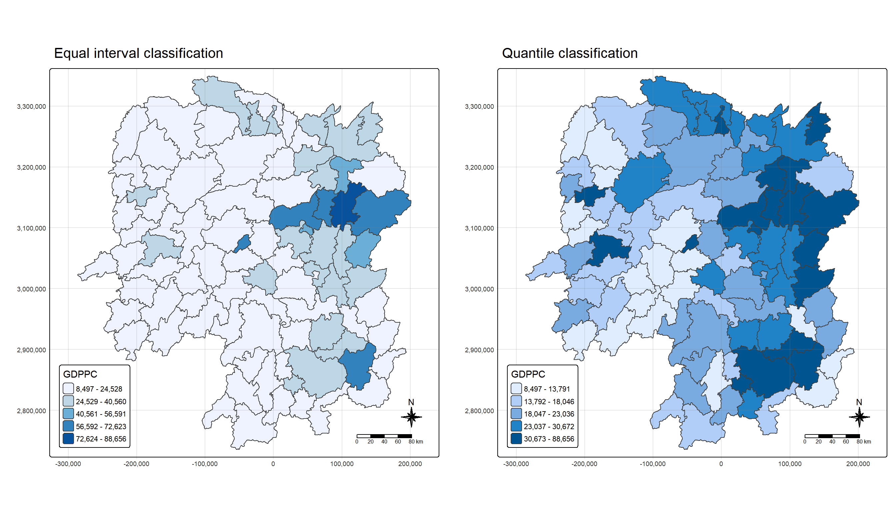
3 Global Measures of Spatial Association
3.1 Computing Contiguity Spatial Weights: sfdep method
wm_q <- hunan_GDPPC %>%
mutate(nb = st_contiguity(geometry),
wt = st_weights(
nb, style = "W"),
.before = 1)
head(wm_q)Simple feature collection with 6 features and 8 fields
Geometry type: POLYGON
Dimension: XY
Bounding box: xmin: -128164.8 ymin: 3176562 xmax: 44429.81 ymax: 3349137
Projected CRS: WGS 84 / UTM zone 50N
nb wt NAME_2 ID_3 NAME_3 ENGTYPE_3
1 2, 3, 4, 57, 85 0.2, 0.2, 0.2, 0.2, 0.2 Changde 21098 Anxiang County
2 1, 57, 58, 78, 85 0.2, 0.2, 0.2, 0.2, 0.2 Changde 21100 Hanshou County
3 1, 4, 5, 85 0.25, 0.25, 0.25, 0.25 Changde 21101 Jinshi County City
4 1, 3, 5, 6 0.25, 0.25, 0.25, 0.25 Changde 21102 Li County
5 3, 4, 6, 85 0.25, 0.25, 0.25, 0.25 Changde 21103 Linli County
6 4, 5, 69, 75, 85 0.2, 0.2, 0.2, 0.2, 0.2 Changde 21104 Shimen County
County GDPPC geometry
1 Anxiang 23667 POLYGON ((22320.48 3301894,...
2 Hanshou 20981 POLYGON ((35522.96 3230355,...
3 Jinshi 34592 POLYGON ((5120.127 3285521,...
4 Li 24473 POLYGON ((-43433.9 3326204,...
5 Linli 25554 POLYGON ((-19307.27 3304609...
6 Shimen 27137 POLYGON ((-89888.78 3347561...3.2 Computing Global Moran’s I
In the code chunk below, global_moran() function is used to compute the Moran’s I value. Different from spdep package, the output is a tibble data.frame.
moranI <- global_moran(wm_q$GDPPC,
wm_q$nb,
wm_q$wt)
glimpse(moranI)List of 2
$ I: num 0.301
$ K: num 7.643.3 Performing Global Moran’s I test
Moran’s I test can be performed by using global_moran_test() as shown in the code chunk below.
global_moran_test(wm_q$GDPPC,
wm_q$nb,
wm_q$wt)
Moran I test under randomisation
data: x
weights: listw
Moran I statistic standard deviate = 4.7351, p-value = 1.095e-06
alternative hypothesis: greater
sample estimates:
Moran I statistic Expectation Variance
0.300749970 -0.011494253 0.004348351 The default for alternative argument is “two.sided”. Other supported arguments are “greater” or “less”. By default the randomization argument is TRUE. If FALSE, under the assumption of normality.
Performing Global Moran’I permutation test
global_moran_perm() is used to perform Monte Carlo simulation.
set.seed(1234)global_moran_perm(wm_q$GDPPC,
wm_q$nb,
wm_q$wt,
nsim = 99) #100 simulations since the it starts with 0.
Monte-Carlo simulation of Moran I
data: x
weights: listw
number of simulations + 1: 100
statistic = 0.30075, observed rank = 100, p-value < 2.2e-16
alternative hypothesis: two.sidedAt the 95% confidence level, p-value is less than 0.05, we reject the null hypothesis. Moran’s I value is 0.3 which is a sign of moderate clustering.
Caution
When we fail to reject the null hypothesis, we should continue to examine further, since there is still possibility that at local level there are hot spot and cold spot areas.
##LISA Map
LISA map is a categorical map showing outliers and clusters. There are two types of outliers namely: High-Low and Low-High outliers. Likewise, there are two type of clusters namely: High-High and Low-Low cluaters. In fact, LISA map is an interpreted map by combining local Moran’s I of geographical areas and their respective p-values.
3.4 Computing local Moran’s I
The code chunk below calculates Local Moran’s I of GDPPC at county level by using local_moran() of sfdep package.
lisa <- wm_q %>%
mutate(local_moran = local_moran(
GDPPC, nb, wt, nsim = 99),
.before = 1) %>%
unnest(local_moran)The output of local_moran() is a sf data.frame containing the columns ii, eii, var_ii, z_ii, p_ii, p_ii_sim, and p_folded_sim.
ii: local moran statistic
eii: expectation of local moran statistic; for localmoran_perm the permutation sample means
var_ii: variance of local moran statistic; for localmoran_perm the permutation sample standard deviations
z_ii: standard deviate of local moran statistic; for localmoran_perm based on permutation sample means and standard deviations
p_ii: p-value of local moran statistic using pnorm(); for localmoran_perm using standard deviates based on permutation sample means and standard deviations
p_ii_sim: For localmoran_perm(), rank() and punif() of observed statistic rank for [0, 1] p-values using alternative=
-p_folded_sim: the simulation folded [0, 0.5] range ranked p-value (based on https://github.com/pysal/esda/blob/4a63e0b5df1e754b17b5f1205b cadcbecc5e061/esda/crand.py#L211-L213)
skewness: For localmoran_perm, the output of e1071::skewness() for the permutation samples underlying the standard deviates
kurtosis: For localmoran_perm, the output of e1071::kurtosis() for the permutation samples underlying the standard deviates.
3.5 Visualising local Moran’s I
In this code chunk below, tmap functions are used prepare a choropleth map by using value in the ii field.
tmap_mode("plot")
tm_shape(lisa) +
tm_fill("ii") +
tm_borders(alpha = 0.5) +
tm_view(set.zoom.limits = c(6,8)) +
tm_layout(
main.title = "local Moran's I of GDPPC",
main.title.size = 2)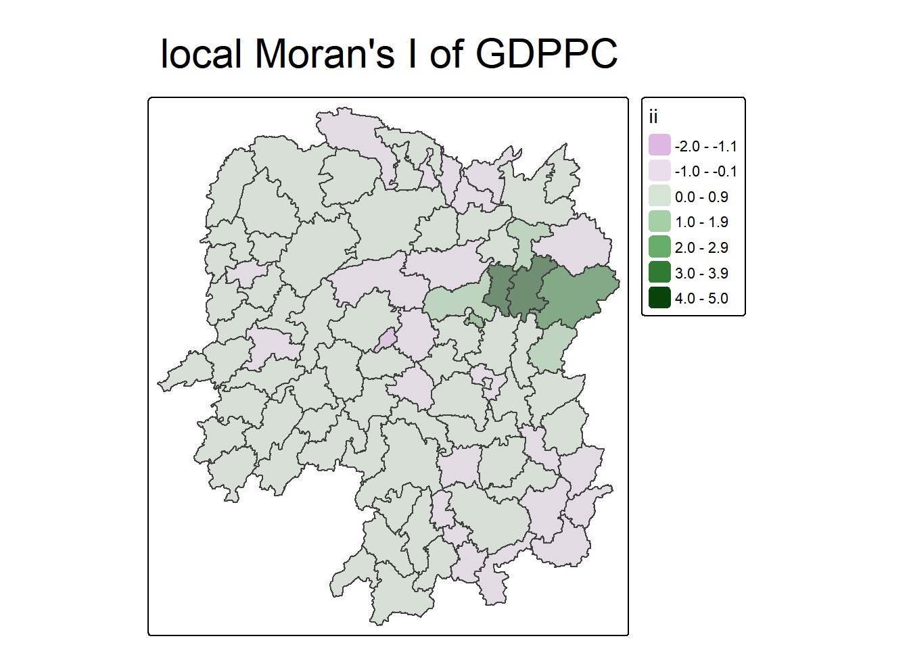
3.6 Visualising p-value of local Moran’s I
Tmap functions are used to prepare a choropleth map below by using value in the p_ii_sim field.
tmap_mode("plot")
tm_shape(lisa) +
tm_fill("p_ii_sim") +
tm_borders(alpha = 0.5) +
tm_layout(main.title = "p-value of local Moran's I",
main.title.size = 2)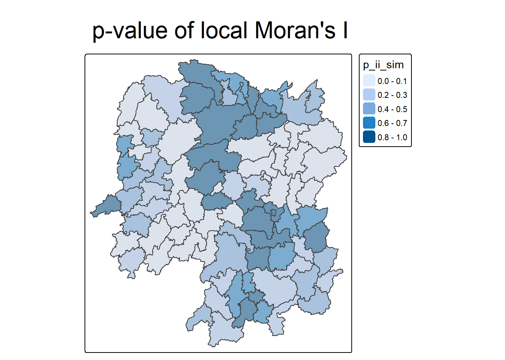
Warning
For p-values, the appropriate classification should be 0.001, 0.01, 0.05 and not significant instead of using default classification scheme.
tm_shape(lisa) +
tm_fill(
"p_ii_sim",
breaks = c(0, 0.001, 0.01, 0.05, 1),
labels = c("<0.001","0.001-0.01", "0.01-0.05", "Insignificant >0.05"),
palette = "-turbo",
title = "p-value"
) +
tm_borders(alpha = 0.5) +
tm_layout(
main.title = "P-value of Local Moran's I",
main.title.size = 1.2,
legend.outside = TRUE
)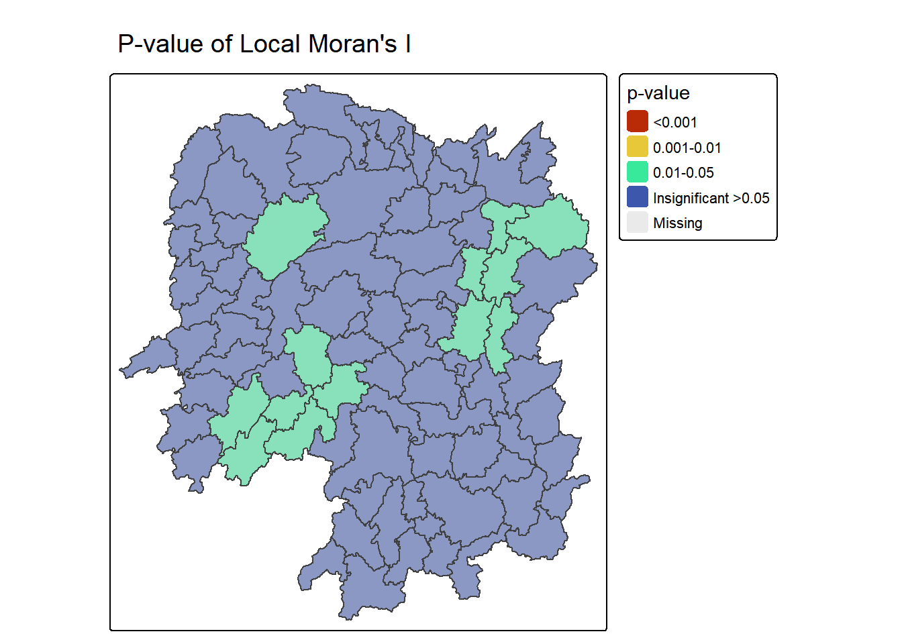
3.7 Visualising local Moran’s I and p-value
tmap_mode("plot")
map1 <- tm_shape(lisa) +
tm_fill("ii") +
tm_borders(alpha = 0.5) +
tm_view(set.zoom.limits = c(6,8)) +
tm_layout(main.title = "local Moran's I of GDPPC",
main.title.size = 0.8)
map2 <- tm_shape(lisa) +
tm_fill("p_ii",
breaks = c(0, 0.001, 0.01, 0.05, 1),
labels = c("0.001", "0.01", "0.05", "Not sig")) +
tm_borders(alpha = 0.5) +
tm_layout(main.title = "p-value of local Moran's I",
main.title.size = 0.8)
tmap_arrange(map1, map2, ncol = 2)
3.8 Plotting LISA map
In lisa sf data.frame, we can find three fields contain the LISA categories. They are mean, median and pysal. In general, classification in mean will be used as shown in the code chunk below.
lisa_sig <- lisa%>%
filter(p_ii_sim < 0.05)
tmap_mode("plot")
tm_shape(lisa) +
tm_polygons() +
tm_borders(alpha = 0.5) +
tm_shape(lisa_sig) +
tm_fill("mean") +
tm_borders(alpha = 0.4)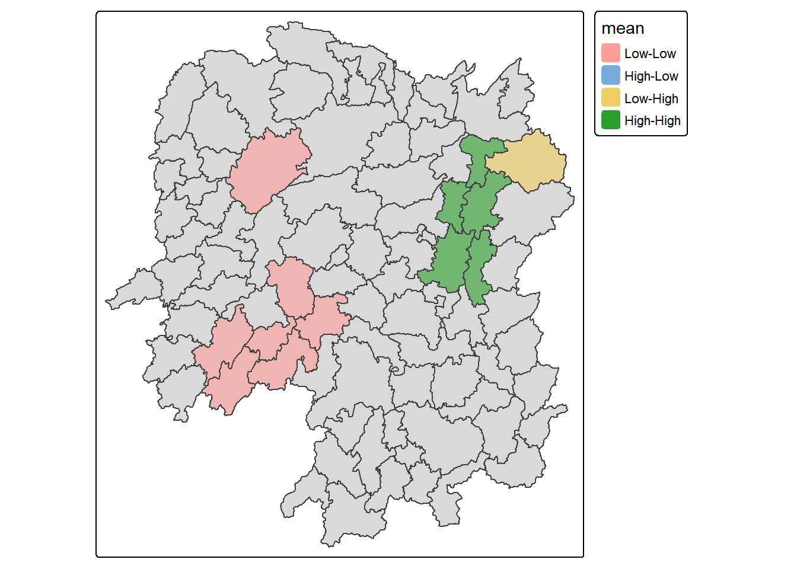
4 Hot Spot and Cold Spot Area Analysis (HCSA)
HCSA uses spatial weights to find areas where high (hot) or low (cold) values cluster together based on distance. It analyses polygon features, such as administrative boundaries or custom grids, to identify statistically significant hotspots and coldspots.
4.1 Computing local Gi* statistics
As usual, we first derive a spatial weights matrix before computing local Gi* statistics. The code below uses sfdep with tidyverse to build the weights.
wm_idw <- hunan_GDPPC %>%
mutate(nb = include_self(
st_contiguity(geometry)),
wts = st_inverse_distance(nb,
geometry,
scale = 1,
alpha = 1),
.before = 1)
Note
Gi* and local Gi* are distance-based spatial statistics, so distance-based methods (rather than contiguity) should be used to create the spatial weights matrix.
Because Gi* measures each feature’s value relative to its neighbours, include_self() is applied to ensure each feature is included in its own neighbourhood during the calculation.
4.2 Computing local Gi* statistics
The local Gi* is calculated by using local_gstar_perm() of sfdep package.
HCSA <- wm_idw %>%
mutate(local_Gi = local_gstar_perm(
GDPPC, nb, wts, nsim = 99),
.before = 1) %>%
unnest(local_Gi)
HCSASimple feature collection with 88 features and 18 fields
Geometry type: POLYGON
Dimension: XY
Bounding box: xmin: -316283 ymin: 2735534 xmax: 230955.3 ymax: 3349137
Projected CRS: WGS 84 / UTM zone 50N
# A tibble: 88 × 19
gi_star cluster e_gi var_gi std_dev p_value p_sim p_folded_sim skewness
<dbl> <fct> <dbl> <dbl> <dbl> <dbl> <dbl> <dbl> <dbl>
1 0.263 Low 1.28e-6 1.10e-13 0.286 7.75e-1 0.66 0.33 0.783
2 -0.277 Low 9.67e-7 4.70e-14 -0.123 9.02e-1 0.98 0.49 0.701
3 0.00336 High 1.54e-6 2.41e-13 -0.0597 9.52e-1 0.78 0.39 0.941
4 0.523 High 1.55e-6 2.86e-13 0.318 7.50e-1 0.58 0.29 0.931
5 0.461 High 1.38e-6 2.73e-13 0.382 7.03e-1 0.58 0.29 1.28
6 -0.427 High 1.04e-6 7.67e-14 -0.565 5.72e-1 0.74 0.37 0.678
7 2.95 High 6.98e-7 4.04e-14 3.08 2.07e-3 0.04 0.02 0.983
8 2.02 High 1.54e-6 1.62e-13 1.75 8.00e-2 0.14 0.07 1.26
9 4.41 High 1.30e-6 1.18e-13 4.22 2.41e-5 0.02 0.01 1.20
10 1.21 Low 1.75e-6 1.26e-13 1.49 1.35e-1 0.18 0.09 0.405
# ℹ 78 more rows
# ℹ 10 more variables: kurtosis <dbl>, nb <nb>, wts <list>, NAME_2 <chr>,
# ID_3 <int>, NAME_3 <chr>, ENGTYPE_3 <chr>, County <chr>, GDPPC <dbl>,
# geometry <POLYGON [m]>glimpse(HCSA)Rows: 88
Columns: 19
$ gi_star <dbl> 0.262986865, -0.276763212, 0.003362942, 0.522833952, 0.46…
$ cluster <fct> Low, Low, High, High, High, High, High, High, High, Low, …
$ e_gi <dbl> 1.278802e-06, 9.671592e-07, 1.537415e-06, 1.547806e-06, 1…
$ var_gi <dbl> 1.096630e-13, 4.699956e-14, 2.413774e-13, 2.861214e-13, 2…
$ std_dev <dbl> 0.28612898, -0.12311405, -0.05972662, 0.31799883, 0.38153…
$ p_value <dbl> 7.747793e-01, 9.020168e-01, 9.523734e-01, 7.504858e-01, 7…
$ p_sim <dbl> 0.66, 0.98, 0.78, 0.58, 0.58, 0.74, 0.04, 0.14, 0.02, 0.1…
$ p_folded_sim <dbl> 0.33, 0.49, 0.39, 0.29, 0.29, 0.37, 0.02, 0.07, 0.01, 0.0…
$ skewness <dbl> 0.7834863, 0.7010883, 0.9408244, 0.9312893, 1.2794221, 0.…
$ kurtosis <dbl> -0.17420093, -0.13111342, 0.19425163, 0.15135610, 1.76317…
$ nb <nb> <1, 2, 3, 4, 57, 85>, <1, 2, 57, 58, 78, 85>, <1, 3, 4, 5,…
$ wts <list> <0.000000e+00, 1.535214e-05, 3.582140e-05, 2.166411e-05,…
$ NAME_2 <chr> "Changde", "Changde", "Changde", "Changde", "Changde", "C…
$ ID_3 <int> 21098, 21100, 21101, 21102, 21103, 21104, 21109, 21110, 2…
$ NAME_3 <chr> "Anxiang", "Hanshou", "Jinshi", "Li", "Linli", "Shimen", …
$ ENGTYPE_3 <chr> "County", "County", "County City", "County", "County", "C…
$ County <chr> "Anxiang", "Hanshou", "Jinshi", "Li", "Linli", "Shimen", …
$ GDPPC <dbl> 23667, 20981, 34592, 24473, 25554, 27137, 63118, 62202, 7…
$ geometry <POLYGON [m]> POLYGON ((22320.48 3301894,..., POLYGON ((35522.9…4.3 Visualising Gi*
We use tmap functions to plot the local Gi* (i.e. gi_star) for Hunan.
tmap_mode("plot")
tm_shape(HCSA) +
tm_fill("gi_star") +
tm_borders(alpha = 0.5) +
tm_view(set.zoom.limits = c(6,8))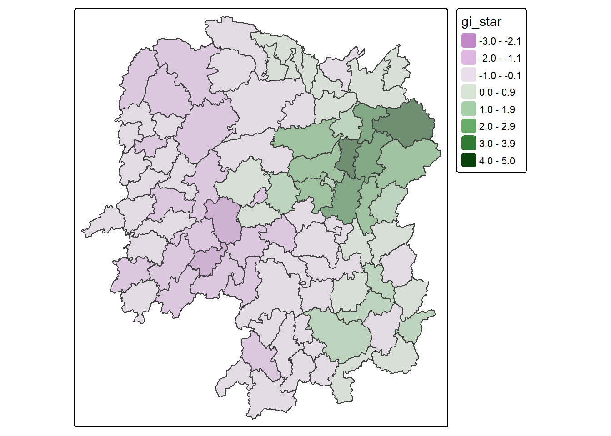
4.4 Visualising p-value of HCSA
Similarly, we use tmap functions to plot p-value of HCSA for Hunan.
tmap_mode("plot")
tm_shape(HCSA) +
tm_fill("p_sim") +
tm_borders(alpha = 0.5)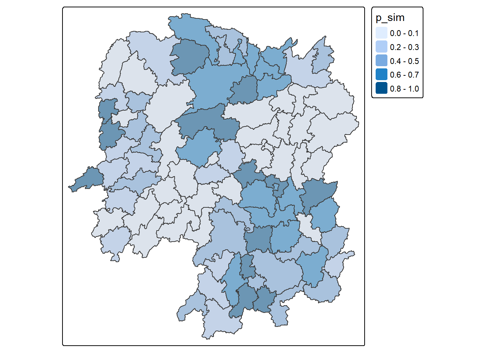
4.5 Visuaising Local HCSA
Next we plot the choropleth maps for local Gi* and its p-value together.
tmap_mode("plot")
map1 <- tm_shape(HCSA) +
tm_fill("gi_star",
fill.legend = tm_legend(
position = c("left", "bottom"))) +
tm_borders(alpha = 0.5) +
tm_view(set.zoom.limits = c(6,8)) +
tm_layout(main.title = "Gi* of GDPPC",
main.title.size = 0.8)
map2 <- tm_shape(HCSA) +
tm_fill("p_value",
breaks = c(0, 0.001, 0.01, 0.05, 1),
labels = c("0.001", "0.01", "0.05", "Not sig"),
fill.legend = tm_legend(
position = c("left", "bottom"))) +
tm_borders(alpha = 0.5) +
tm_layout(main.title = "p-value of Gi*",
main.title.size = 0.8)
tmap_arrange(map1, map2, ncol = 2)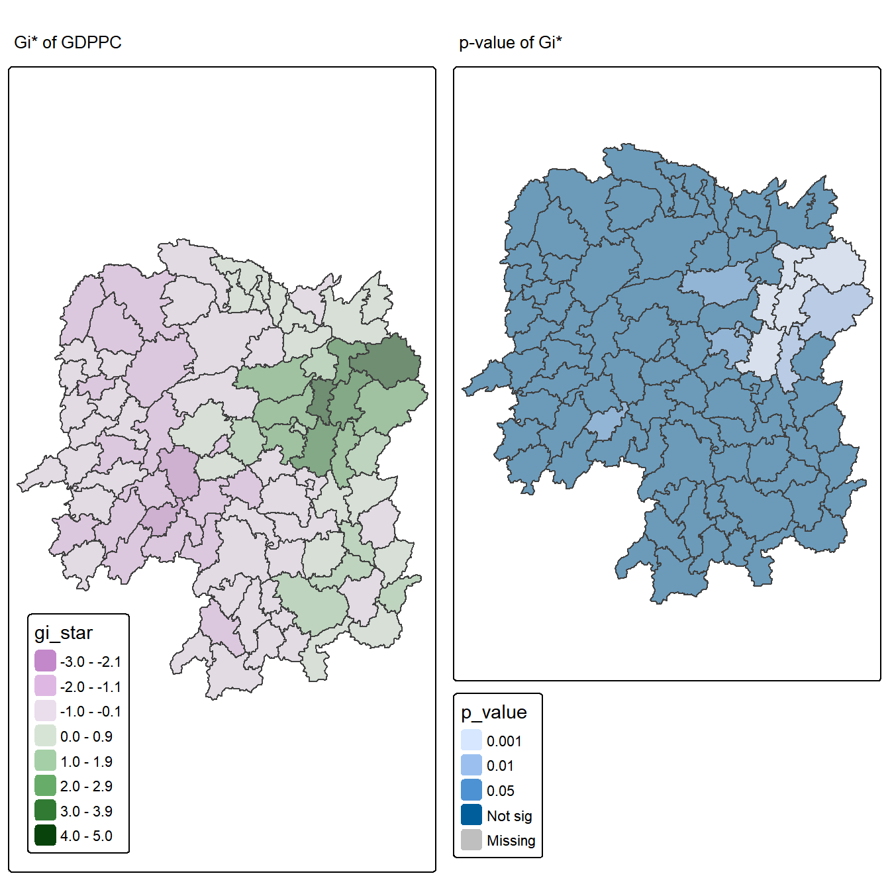
4.6 Visualising hot spot and cold spot areas
The code chunk below colour codes the hot and cold areas based on the significant (i.e. p-values less than 0.05).
HCSA_sig <- HCSA %>%
filter(p_sim < 0.05)
tmap_mode("plot")
tm_shape(HCSA) +
tm_polygons() +
tm_borders(alpha = 0.5) +
tm_shape(HCSA_sig) +
tm_fill("cluster") +
tm_borders(alpha = 0.4)
Note
The figure above show a few hot spot and cold spot areas. Notably, the hotspot aligns with the High–High cluster previously identified using the Local Moran’s I method.
5 In-class Ex Part-2: Emerging Hot Spot Analysis (EHSA)
EHSA Four steps:
Build a space–time cube.
Calculate local Gi*.
-Evaluate the hot/cold-spot trend using the Mann–Kendall test.
- Categorising each study area location by referring to the resultant trend z-score and p-value for each location with data, and with the hot spot z-score and p-value for each bin.
6 Getting started
6.1 Installing and Loading the R Packages
pacman::p_load(sf, sfdep, tmap,
plotly, tidyverse,
Kendall)6.2 Importing Data
6.2.1 Importing Geospatial Data
The code chunk below imports hunan, a geospatial data set in ESRI shapefile format.
hunan <- st_read(dsn = "data/geospatial", layer = "hunan") %>%
st_transform(crs = 32650)Reading layer `hunan' from data source
`C:\lsrgc\ISSS626-yiqiong-pan\In-class_Ex\In-class_Ex05\data\geospatial'
using driver `ESRI Shapefile'
Simple feature collection with 88 features and 7 fields
Geometry type: POLYGON
Dimension: XY
Bounding box: xmin: 108.7831 ymin: 24.6342 xmax: 114.2544 ymax: 30.12812
Geodetic CRS: WGS 84st_crs(hunan)Coordinate Reference System:
User input: EPSG:32650
wkt:
PROJCRS["WGS 84 / UTM zone 50N",
BASEGEOGCRS["WGS 84",
ENSEMBLE["World Geodetic System 1984 ensemble",
MEMBER["World Geodetic System 1984 (Transit)"],
MEMBER["World Geodetic System 1984 (G730)"],
MEMBER["World Geodetic System 1984 (G873)"],
MEMBER["World Geodetic System 1984 (G1150)"],
MEMBER["World Geodetic System 1984 (G1674)"],
MEMBER["World Geodetic System 1984 (G1762)"],
MEMBER["World Geodetic System 1984 (G2139)"],
MEMBER["World Geodetic System 1984 (G2296)"],
ELLIPSOID["WGS 84",6378137,298.257223563,
LENGTHUNIT["metre",1]],
ENSEMBLEACCURACY[2.0]],
PRIMEM["Greenwich",0,
ANGLEUNIT["degree",0.0174532925199433]],
ID["EPSG",4326]],
CONVERSION["UTM zone 50N",
METHOD["Transverse Mercator",
ID["EPSG",9807]],
PARAMETER["Latitude of natural origin",0,
ANGLEUNIT["degree",0.0174532925199433],
ID["EPSG",8801]],
PARAMETER["Longitude of natural origin",117,
ANGLEUNIT["degree",0.0174532925199433],
ID["EPSG",8802]],
PARAMETER["Scale factor at natural origin",0.9996,
SCALEUNIT["unity",1],
ID["EPSG",8805]],
PARAMETER["False easting",500000,
LENGTHUNIT["metre",1],
ID["EPSG",8806]],
PARAMETER["False northing",0,
LENGTHUNIT["metre",1],
ID["EPSG",8807]]],
CS[Cartesian,2],
AXIS["(E)",east,
ORDER[1],
LENGTHUNIT["metre",1]],
AXIS["(N)",north,
ORDER[2],
LENGTHUNIT["metre",1]],
USAGE[
SCOPE["Navigation and medium accuracy spatial referencing."],
AREA["Between 114°E and 120°E, northern hemisphere between equator and 84°N, onshore and offshore. Brunei. China. Hong Kong. Indonesia. Malaysia - East Malaysia - Sarawak. Mongolia. Philippines. Russian Federation. Taiwan."],
BBOX[0,114,84,120]],
ID["EPSG",32650]]6.2.2 Importing Aspatial Data
The code chunk below imports Hunan_GDPPC, an attribute data set in csv format.
GDPPC <- read_csv("data/aspatial/Hunan_GDPPC.csv")
Important
The GDPPC data set must follow certain orders to avoid the errors (time (integer), space, value).
7 Step 1: Creating a Time Series Cube
The code chunk below uses spacetime() of sfdep to create an spatio-temporal cube and verifies the class using is_spacetime_cube().
GDPPC_st <- spacetime(GDPPC, hunan, .loc_col = "County", .time_col ="Year") # data, geometry, loc, time
is_spacetime_cube(GDPPC_st)[1] TRUE8 Step 2: Calculate local Gi*
8.1 Deriving the spatial weights
The code chunk below uses:
activate()of dplyr package to activate the geometry context;mutate()of dplyr package create two new columnsnbandwt;
Then we will activate the data context again and copy over the nb and wt columns to each time-slice using set_nbs() and set_wts(). Row order is very important, so do not rearrange the observations after using set_nbs() or set_wts().
GDPPC_nb <- GDPPC_st %>%
activate("geometry") %>% #activate is crucial
mutate(nb = include_self( #ensures each region is considered its own neighbour (adds self-links).
st_contiguity(geometry)), #contiguity-based neighbour list
wt = st_inverse_distance(nb, #builds a spatial weight matrix using inverse-distance weighting.
geometry,
scale = 1,
alpha = 1),
.before = 1) %>%
set_nbs("nb") %>% #Registers the column "nb" as the active neighbours list in object.
set_wts("wt") #Registers the "wt" column as the active weight matrix.Dataset now has neighbours and weights for each time-slice.
Here we explicitly build a distance-based weight matrix.
Each neighbour’s influence is weighted by the inverse of its distance (1/d^α).
scale and alpha control the functional form (scale factor and decay rate).
This is suitable when we want weights to reflect spatial proximity (closer neighbours contribute more, farther neighbours less).
Important
In short, we chose inverse distance weights to capture continuous spatial interaction (e.g., GDPPC similarity decays with distance, not just borders).
In Guerry example, they used simple contiguity weights (st_weights(nb) because the analysis follows the classic adjacency-based LISA (Local Indicators of Spatial Association) tradition.
Either is fine for EHSA; just keep it consistent over time.
8.2 Computing Gi*
The code chunk below uses local_gstar_perm() of sfdep package and groupb_by() to calculate the Gi* by year for each location, and flatten out Gi* statisitc matrix as gi_star column and attach to the sf dataset.
group_by(Year) that is why the table format is useful that we can calculate by year.
gi_stars <- GDPPC_nb %>%
group_by(Year) %>%
mutate(gi_star = local_gstar_perm(
GDPPC, nb, wt)) %>%
tidyr::unnest(gi_star)
gi_stars# A tibble: 1,496 × 15
# Groups: Year [17]
Year County GDPPC nb wt gi_star cluster e_gi var_gi std_dev
<dbl> <chr> <dbl> <list> <lis> <dbl> <fct> <dbl> <dbl> <dbl>
1 2005 Anxiang 8184 <int [6]> <dbl> 0.398 High 0.0115 2.69e-6 0.382
2 2005 Hanshou 6560 <int [6]> <dbl> -0.237 Low 0.0109 2.64e-6 0.00199
3 2005 Jinshi 9956 <int [5]> <dbl> 1.05 High 0.0126 3.33e-6 0.507
4 2005 Li 8394 <int [5]> <dbl> 0.966 High 0.0117 3.24e-6 0.920
5 2005 Linli 8850 <int [5]> <dbl> 1.05 High 0.0120 3.23e-6 0.885
6 2005 Shimen 9244 <int [6]> <dbl> 0.210 High 0.0121 2.99e-6 -0.215
7 2005 Liuyang 13406 <int [5]> <dbl> 3.91 High 0.0142 2.52e-6 3.36
8 2005 Ningxiang 11687 <int [8]> <dbl> 1.61 High 0.0127 2.30e-6 0.895
9 2005 Wangcheng 14659 <int [7]> <dbl> 3.88 High 0.0140 2.49e-6 2.73
10 2005 Anren 7423 <int [9]> <dbl> 1.67 Low 0.0113 2.14e-6 1.87
# ℹ 1,486 more rows
# ℹ 5 more variables: p_value <dbl>, p_sim <dbl>, p_folded_sim <dbl>,
# skewness <dbl>, kurtosis <dbl>
Note
local_gstar_perm
x, # numeric vector
nb, # nb list created by st_contiguity() etc
wt, # listw created by st_weights() etc
nsim = 499, #default 99? or 499?
alternative = “two.sided”, # default
… )
9 Step 3: Mann-Kendall Test
Mann–Kendall (MK) is a non-parametric trend test:
H₀: no monotonic trend (flat).
H₁: a monotonic trend exists (consistently increases or decreases).
9.1 Interpreting Kendall’s
τ ranges from −1 to +1 (direction = sign; strength = magnitude).
In Kendall::MannKendall, sl is the p-value.
9.2 Mann-Kendall Test on Gi
Outliers/clusters vs hot/cold spots: Local Moran’s I (LISA) finds high–high/low–low clusters and outliers;
EHSA/Gi* focuses on hot/cold spots.
We select counties manually to show their Gi* time series and MK result (trend line figure).
The code chunk below filters the required region: Changsha county and plot the result to evaluate local tread using Mann-Kendall test.
cbg <- gi_stars %>%
ungroup() %>%
filter(County == "Changsha") |>
select(County, Year, gi_star)ggplot(data = cbg,
aes(x = Year,
y = gi_star)) +
geom_line() +
theme_light()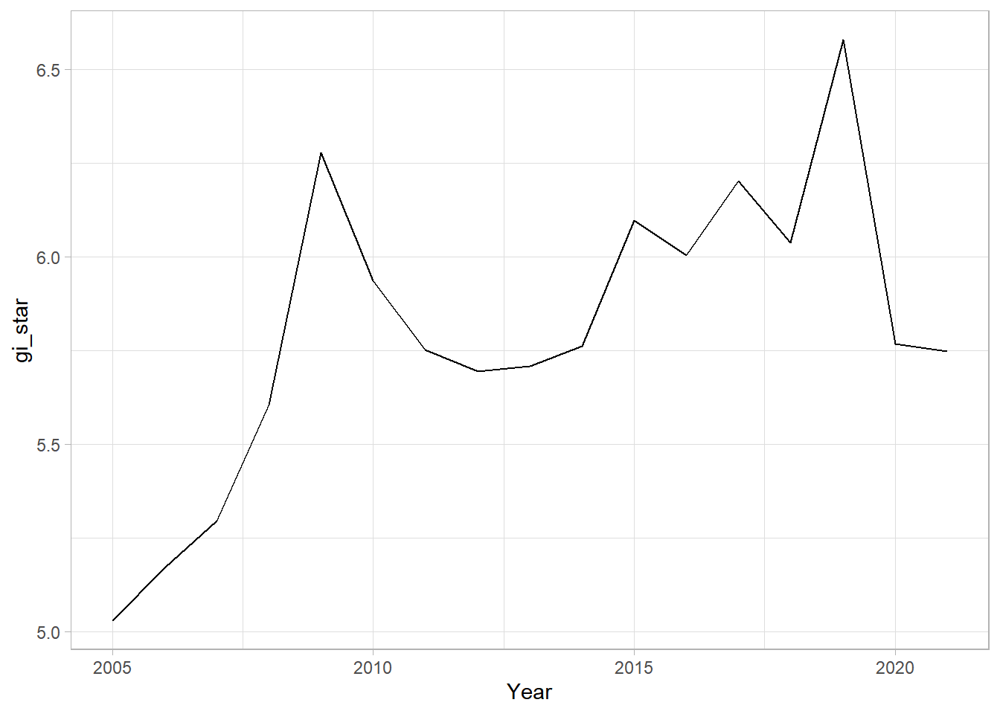
THe code chunk below uses ggplotly() of plotly package for an interactive plot where we can observe the exact Gi* value for each year.
p <- ggplot(data = cbg,
aes(x = Year,
y = gi_star)) +
geom_line() +
theme_light()
ggplotly(p)9.3 Printing Mann-Kendall test report
The code chunk below generates a summary on the Kendall test for Changsha.
The Mann–Kendall test yields a Kendall’s tau of 0.48, indicating a moderate positive monotonic trend. Since the p-value (0.007) is less than 0.05, we reject the null hypothesis of no trend and conclude that the data exhibit a statistically significant upward trend.
cbg %>%
summarise(mk = list(
unclass(
Kendall::MannKendall(gi_star)))) %>%
tidyr::unnest_wider(mk)# A tibble: 1 × 5
tau sl S D varS
<dbl> <dbl> <dbl> <dbl> <dbl>
1 0.485 0.00742 66 136. 589.9.4 Mann-Kendall test data.frame
We can replicate this for each location by using group_by() of dplyr package.
ehsa <- gi_stars %>%
group_by(County) %>%
summarise(mk = list(
unclass(
Kendall::MannKendall(gi_star)))) %>%
tidyr::unnest_wider(mk)
head(ehsa)# A tibble: 6 × 6
County tau sl S D varS
<chr> <dbl> <dbl> <dbl> <dbl> <dbl>
1 Anhua 0.191 0.303 26 136. 589.
2 Anren -0.294 0.108 -40 136. 589.
3 Anxiang 0 1 0 136. 589.
4 Baojing -0.691 0.000128 -94 136. 589.
5 Chaling -0.0882 0.650 -12 136. 589.
6 Changning -0.750 0.0000318 -102 136. 589.We can also sort to show significant emerging hot/cold spots
# A tibble: 6 × 6
County tau sl S D varS
<chr> <dbl> <dbl> <dbl> <dbl> <dbl>
1 Shuangfeng 0.868 0.00000143 118 136. 589.
2 Xiangtan 0.868 0.00000143 118 136. 589.
3 Xiangxiang 0.868 0.00000143 118 136. 589.
4 Chengbu -0.824 0.00000482 -112 136. 589.
5 Dongan -0.824 0.00000482 -112 136. 589.
6 Wugang -0.809 0.00000712 -110 136. 589.10 Step 4: Performing Emerging Hotspot Analysis
Lastly, we will perform EHSA analysis by using emerging_hotspot_analysis() of sfdep package.
Note
emerging_hotspot_analysis(
- x, #spacetime object
- .var, # numeric vector with no missing value
- k = 1, # 3 consecutive for annual (3 years), if quarterly/monthly consider 4-6
- include_gi = FALSE, # True recommended, but False for speed
- nb_col = NULL,
- wt_col = NULL,
- nsim = 199, #default
- threshold = 0.01, #The significance threshold to use. … )
Gi_Bin = case_when( - gi_star >= 2.58 ~ 3L, #99% - gi_star >= 1.96 ~ 2L, #95% - gi_star >= 1.65 ~ 1L, #90% - gi_star <= -2.58 ~ -3L,
- gi_star <= -1.96 ~ -2L, - gi_star <= -1.65 ~ -1L, - TRUE ~ 0L #not sig
10.1 EHSA
The code chunk below generates the EHSA statistics for each region.
set.seed(1234)ehsa_sim <- emerging_hotspot_analysis(
x = GDPPC_st, # spacetime object
.var = "GDPPC", # variable of interest
k = 1, # Number of time lags, default 1
nsim = 99 # 100 permutations
)10.2 Viusalising the EHSA Class Distribution
Bar chart summarises counts of Hot/Cold spots. Figure above shows that sporadic cold spots class has the high numbers of county.
ggplot(data = subset(ehsa_sim, p_value < 0.05), # we see the auto-classification is misleading
aes(x = classification)) +
geom_bar()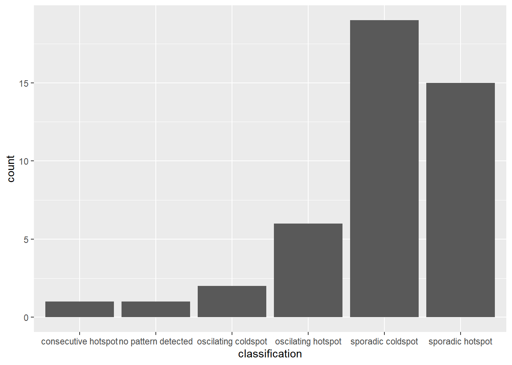
10.3 Visualising EHSA
First, we need to join both hunan and ehsa together by using the code chunk below.
hunan_ehsa <- hunan %>%
left_join(ehsa_sim,
by = join_by(County == location))Next, tmap functions will be used to plot a categorical choropleth map by using the code chunk below.
ehsa_sig <- hunan_ehsa %>%
filter(p_value < 0.05)
tmap_mode("plot")
tm_shape(hunan_ehsa) +
tm_polygons() +
tm_borders(alpha = 0.5) +
tm_shape(ehsa_sig) +
tm_fill("classification") +
tm_borders(alpha = 0.4)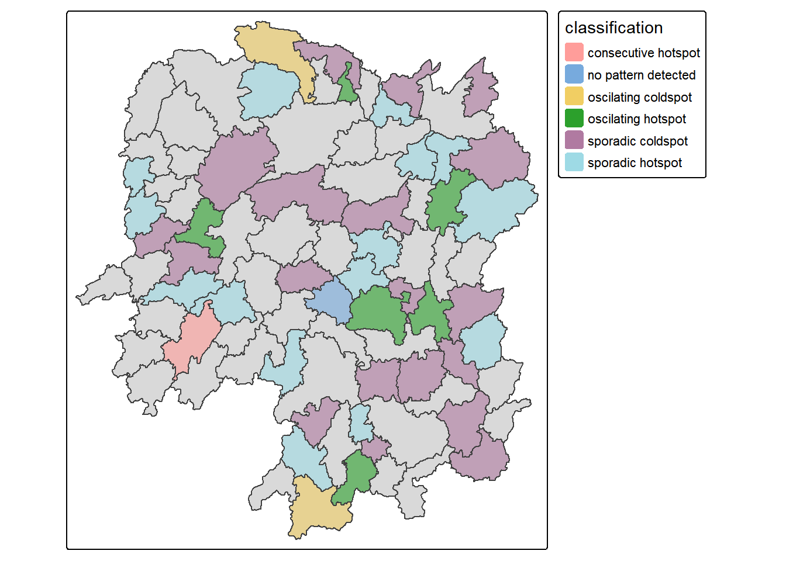
10.4 Plot DIY
- Gi*
gi_stars |>
mutate(bins = case_when(
gi_star > 0 & p_sim <= 0.01 ~ "Hot 99%",
gi_star > 0 & p_sim <= 0.05 ~ "Hot 95%",
gi_star > 0 & p_sim <= 0.10 ~ "Hot 90%",
gi_star < 0 & p_sim <= 0.01 ~ "Cold 99%",
gi_star < 0 & p_sim <= 0.05 ~ "Cold 95%",
gi_star < 0 & p_sim <= 0.10 ~ "Cold 90%",
TRUE ~ "Not Sig"
)) |>
ggplot(aes(fill = bins)) +
geom_sf(lwd = 0.2, color = "black") +
scale_fill_manual(
values = c(
"Cold 99%"="#08306B","Cold 95%"="#2171B5","Cold 90%"="#6BAED6",
"Not Sig"="#D9D9D9",
"Hot 90%"="#FC9272","Hot 95%"="#FB6A4A","Hot 99%"="#CB181D"
),
drop = FALSE
) +
theme_void()- EHSA: DONE
Important
Gi* is computed for each year (i.e., for the space–time cube bins). We report both z-scores and p-values; bins with p ≥ 0.05 are labelled as Insignificant. The summary of insignificant bins by year is analogous to a Moran’s I summary, but based on Gi* z-scores and p-values. Visualising EHSA results should explicitly incorporate the p-value. Update the plot on slide p18 to include an Insignificant legend entry, consistent with the HCSA map shown in Chapter 10.
Tip
Master the explanation chart for hot/cold-spot definitions, p 19-22.
For example, for a Sporadic Hot Spot, point to the region on p18 and cross-reference its Gi* trend line on p11.
Select sample locations for each category to explain the spatial patterns.
Be careful with the steps (document thresholds, weights, and binning).
TL;DR
Use local_gstar_perm() for fine-grained diagnostics & sensitivity analysis.
Use emerging_hotspot_analysis() for a clean, reproducible end result.
Keep nb/wt fixed across years; match nsim/alpha; and compare outputs with a small reconciliation table before final mapping.
ArcGIS defines 18 categories:
Hot Spot families (9 types):
New Hot Spot: First time a Hot Spot appears, and it’s recent.
Consecutive Hot Spot: Hot Spot in each of the last k time steps (default k=3).
Intensifying Hot Spot: Hot in ≥90% of all time steps and Gi* z-scores show a significant upward MK trend.
Persistent Hot Spot: Hot in ≥90% of all time steps, no significant MK trend.
Diminishing Hot Spot: Hot in ≥90% of all time steps and significant downward MK trend.
Sporadic Hot Spot: Hot in <90% of time steps, nonconsecutive, not just one.
Oscillating Hot Spot: Alternates between Hot and Cold across time.
Historical Hot Spot: Was Hot before but not in the last k slices.
No Pattern Detected (applies if Insig or no strong classification).
Cold Spot families (mirror 8 types):
New Cold Spot
Consecutive Cold Spot
Intensifying Cold Spot
Persistent Cold Spot
Diminishing Cold Spot
Sporadic Cold Spot
Oscillating Hot/Cold
Historical Cold Spot


11 Reference
Dr.Kam Tin Seong, 21/09/2025, In-class Exercise 6: Emerging Hot Spot Analysis
https://isss626-ay2025-26aug.netlify.app/in-class_ex/in-class_ex06/in-class_ex06-ehsa